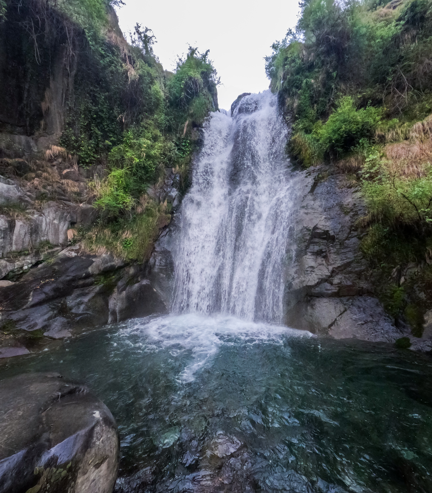
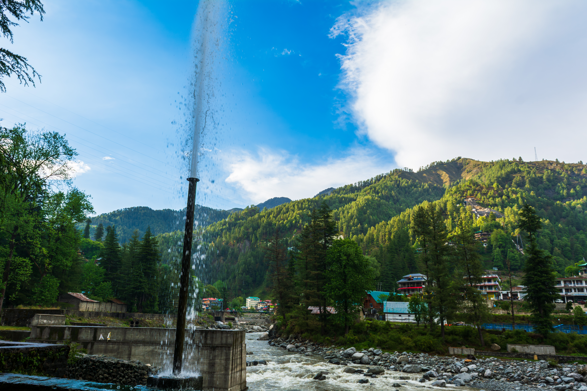
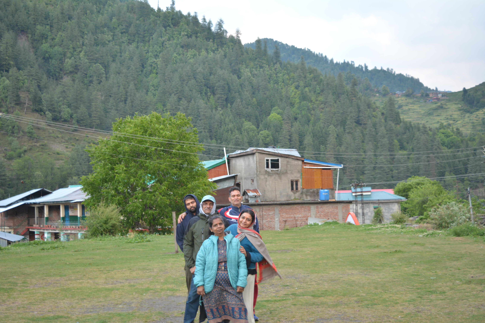
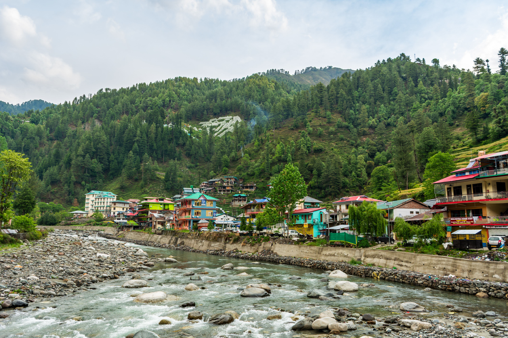

There are some journeys that end the day you return home, and then there are journeys that continue
long after the trip is over. They stay in your thoughts, shape your perspective, and slowly change
the way you see the world. For me, Ladakh was one such journey. It was my first trip, my first
experience of chasing mountains, waiting for golden sunrises, and carrying a camera with dreams
larger than the backpack on my shoulders. Back then, I believed travelling was about reaching
beautiful destinations and bringing back beautiful photographs.
But little did I know that the hunger born during that journey would only grow stronger with time.
With every road travelled and every mountain explored after Ladakh, that desire to wander kept increasing.
Photography remained my closest companion, but somewhere between framing landscapes and collecting memories,
I began changing. The photographer in me slowly started making space for a traveller. A traveller who wanted
to understand places rather than just capture them. A traveller who wanted to feel the stories hidden behind
valleys, rivers, and mountains. Looking back today, I realise how much I have grown between my first trip and
this latest one. In the coming blogs, I will share more about that transformation.
But for now, let me begin with a place that truly felt like a piece of heaven on Earth.
Nature has blessed Himachal Pradesh with a hidden gem called Barot Valley. Tucked deep within the
mountains, away from the noise of cities and crowded tourist destinations, this valley feels like
a secret carefully preserved by nature itself. Here, the beautiful Uhl River flows gracefully through
the valley, embracing the mountains with its soothing melody. Every turn of the road reveals a view
more breathtaking than the last, as if the valley constantly tries to attract you deeper into its beauty.
To make use of the river's power while preserving the charm of the region, the people here constructed
one of the oldest dams, standing as a symbol of human effort amidst nature's grandeur. Yet, even with
this remarkable structure, it is the untouched beauty of Barot that steals your heart. The fresh mountain
air, the sound of flowing water, the towering peaks, and the peaceful atmosphere make you feel as if time
itself has slowed down.
Standing there, surrounded by the mountains and listening to the river whisper through the valley, I
felt a connection that no photograph could ever fully capture. Some places leave an impression on your
mind, but places like Barot leave a mark on your soul, calling you back long after you have left.
 The Journey to a Hidden Heaven
The Journey to a Hidden Heaven
We began our journey late on a Thursday night. It was a long weekend, and like many of the best adventures
in life, this one was completely impromptu. Out of nowhere, my uncle's family and we decided to pack our
bags and set off towards the mountains. There was no detailed planning, no fixed expectations—just
excitement, curiosity, and the desire to escape into nature.
Travelling through the night, we finally reached Mandi in the early hours. From there, our journey towards
Barot Valley began. Little did we know that the road ahead would test our patience before rewarding us
with its beauty.
The main route to Barot Valley had been closed due to a landslide, forcing us to take an alternative
road. As if that wasn't enough, we soon found ourselves stuck in a massive traffic jam. The narrow
passage had become crowded with vehicles from both directions, and progress seemed impossible. What
was supposed to be a smooth drive turned into a waiting game amidst the mountains.
Just when frustration started creeping in, someone suggested taking a third route—a remote road that
passed through small villages and untouched landscapes. Without much hesitation, we decided to take
the chance.
And that decision changed everything.
As we moved along the winding roads, the mountains slowly revealed their magic. Misty clouds floated
around us, covering the valleys like a soft blanket. Tiny villages appeared between the hills, each
carrying a charm of its own. Every turn opened up a new view more beautiful than the last. The journey
itself became an experience; far more memorable than the destination we were chasing.
After hours of travelling through clouds, forests, and breathtaking scenery, we finally arrived at what
truly felt like heaven in Himachal Pradesh—the beautiful Barot Valley. Surrounded by towering mountains,
fresh air, and untouched natural beauty, every challenge we had faced on the way suddenly felt worth it.
Sometimes, the most beautiful places are reached through the most unexpected roads, and Barot Valley was
one such place.
As soon as we reached Barot Valley and checked into our hotel, the rest of my family did exactly what
anyone would do after an overnight journey—they went straight to their rooms to relax and catch up on
some much-needed sleep. But I have never been that kind of traveller.
For me, a new place isn't meant to be seen from a hotel window. The moment I dropped my bag in the room,
my heart was already outside, wandering through the valley. Sleep could wait; Barot couldn't.
The weather itself seemed to be inviting us out. Gentle raindrops fell from the sky, as if the valley
was welcoming us and whispering, "You have finally arrived in heaven."
Without wasting a minute, I grabbed my cousin and declared that he was coming with me no matter what.
Knowing a typical Indian family, we could already hear the warnings before they were spoken—"It's
raining, stay inside!" So, acting like the rebellious explorers we were, we equipped ourselves with
raincoats and umbrellas to avoid getting scolded later and stepped out into the drizzle.
We wandered through the heart of Barot, soaking in every sight around us. Long before coming here,
I had seen a photograph of a hidden waterfall tucked away in the mountains. That single picture had
sparked a curiosity that refused to leave my mind. Deep down, we knew our parents would never agree
to such an adventure, so we decided this would be our little mission.
The starting point of the trek was around 3–4 kilometers from Barot's main market. Instead of waiting
around, we caught a lift from some friendly locals and reached the trailhead. What awaited us there was
completely unexpected.
The trek began with more than 750 steep steps climbing straight up the mountainside. Each step tested
our legs, and each pause tested our determination. But as we climbed higher, the reward became impossible
to ignore.
The entire Barot Valley unfolded beneath us like a living postcard. The river cut through the valley like
a silver ribbon, tiny houses rested peacefully among the greenery, and the mountains stood tall under the
blanket of drifting clouds. Every breath felt fresher than the last.
As the staircase gave way to a narrow mountain trail, we found ourselves walking through beautiful terraced
fields. Farmers worked tirelessly on the slopes, carrying on a way of life that had existed for generations.
Watching them against the backdrop of such breathtaking scenery made me realize something simple yet
profound—hard work feels lighter when nature rewards you with views like these.
 The Gangsters of the Himalayas
The Gangsters of the Himalayas
After crossing the terraced fields, our journey took an unexpectedly funny turn.
As we continued along the trail and started descending towards the waterfall, we reached a narrow
bridge that connected the path ahead. From a distance, it looked clear, but as we got closer, we
realized the bridge was already occupied.
A gang had taken control of it.
Not the kind of gang you're imagining, though.
These were the real gangsters of the Himalayas—the sheep.
A whole group of them stood right in the middle of the bridge, completely blocking our way. We stopped,
expecting them to move aside and let us pass. But they didn't move an inch. Instead, they simply stared
at us.
And so began one of the strangest staring competitions of my life.
They stared at us.
We stared back.
They stood their ground.
We slowly moved forward.
For a few moments, it felt as if both sides were silently negotiating who would get the right of way.
The sheep looked completely unimpressed by our presence, while we were trying our best to look brave
enough to cross their territory.
Just when it seemed like the standoff would continue forever, the real boss finally arrived.
Their owner appeared from behind the trail and called out to them. Instantly, the entire gang abandoned
their post and ran off together without any resistance. One call was all it took.
The bridge was ours again.
We couldn't help but laugh. It was such a simple moment, yet one of those unexpected travel memories that
stay with you long after the trip ends. Not every adventure is about reaching a destination; sometimes
it's about finding yourself in a staring contest with a group of Himalayan sheep and losing all sense
of seriousness for a few minutes.
 A Waterfall That Felt Like a Reset Button
A Waterfall That Felt Like a Reset Button
And with that little encounter behind us, we finally reached Lapas Waterfall.
The moment it came into view, I knew this wasn't just another waterfall. It was, without a doubt, the
most beautiful waterfall I had ever seen.
There were barely four or five people around. No crowds. No noise. No rush to take pictures. Just the
soothing sound of water cascading from the heights above, crashing into a crystal-clear pool below. The
entire place felt untouched, as if nature had reserved this little corner of paradise for those willing
to make the journey.
For once, I didn't reach for my camera.
Instead, I found a large rock near the edge of the pool and sat there quietly. Sometimes the most
beautiful moments aren't meant to be captured; they're meant to be felt.
As the waterfall thundered down before me, tiny droplets filled the air and settled on my face. It
felt like standing in a gentle rain, even though the sky above was hidden behind the cliffs. Every
splash carried a sense of freshness with it, washing away the exhaustion, stress, and noise of
everyday life.
Sitting there, I realized this wasn't just a waterfall.
It was a reset button.
A reboot for the mind.
The kind of place that reminds you to slow down, breathe deeply, and reconnect with yourself before
returning to the endless routine waiting back home. For those few moments, nothing else mattered.
There were no deadlines, no responsibilities, no distractions—just me, the mountains, and the sound
of falling water.
But as all beautiful moments do, this one too began to fade with the evening light. The sun was slowly
setting behind the mountains, and it was time for us to head back.
Because of the rain, I had left my camera behind, but my GoPro had been a loyal companion throughout
the trek. Before leaving, I stood up one last time, determined to capture the waterfall and the joy of
finally reaching it.
Just then, my brother called out my name.
I turned around instinctively.
Click.
At that exact moment, he captured something far more valuable than the waterfall itself.
He captured pure happiness.
Not the kind that is posed for a photograph, but the kind that appears naturally when your heart is
exactly where it wants to be. A smile born from adventure, from discovery, and from a day spent chasing
something beautiful.
The waterfall stayed in Barot.
The photograph came home with me.
But more importantly, so did that feeling.

A Night of Music and a Morning of Light
After spending those peaceful moments at the waterfall, it was finally time to head back. Unfortunately,
this time luck wasn't on our side—there were no vehicles passing by and no chance of getting a lift.
So we began the long walk back to the hotel.
But strangely, it didn't feel long at all.
The path that had challenged us earlier now felt different. We walked through the valley, talking about the
life we had witnessed around us. The simplicity of it all fascinated us. The farmers working in the fields,
the quiet villages tucked between the mountains, the fresh air, and the absence of the constant rush we are
so used to in cities.
As we walked, one thought kept returning to our minds:
"What a beautiful life it must be here."
The mountains stood silently around us as if listening to our conversations, while the sound of the river
accompanied us throughout the journey back. Before we knew it, we had finally reached the hotel.
A warm dinner was waiting for us, and after a day filled with adventure, every bite tasted even better.
But the day wasn't over yet.
Later in the evening, the hotel staff arranged a bonfire for all the guests staying there. As darkness settled
over the valley, the warmth of the fire brought everyone together. Music filled the air, strangers became
companions, and soon people of all ages were dancing around the flames.
Laughter echoed through the mountains.
For a few hours, nobody cared where they came from or where they were headed next. We were simply a group of
travellers sharing a beautiful evening beneath the Himalayan sky.
It was one of those moments that cannot be planned—only experienced.
The next morning, I woke up early, unwilling to miss a single moment of Barot's magic.
The valley was still waking up as I stepped outside. The air was cold and fresh, carrying a silence that felt
almost sacred. I wandered through the peaceful surroundings, hoping to witness the sunrise.
The sun itself remained hidden behind the towering mountains.
Yet somehow, what I saw felt even more beautiful.
The first golden rays of sunlight began touching the mountains standing opposite the valley. Slowly, the peaks
transformed from dark silhouettes into glowing giants bathed in warm golden light. It felt as if heaven itself
had opened a small window and allowed its light to pour directly onto the mountains.
I stood there in silence, watching nature paint its masterpiece before my eyes.
No camera could truly capture what I was seeing.
The sunlight, the mountains, the stillness of the morning, and the feeling of standing in a place so untouched—it
all came together to create a moment that felt almost unreal.
Barot wasn't just showing me beautiful landscapes anymore.
Where Time Slowed Down
The plan for the day had already been decided by the family—we would all go for a short trek together. When I
returned from my early morning walk through the valley, I was surprised to see that everyone was already awake,
dressed, and ready to leave.
Honestly, I couldn't believe it.
I guess Barot is filled with some kind of magic because even the laziness of my family had disappeared overnight.
We began our trek from the side of the dam, watching the calm waters spread across the valley like a giant mirror
reflecting the surrounding mountains. The trail led us through two small and beautiful villages where life moved
at its own peaceful pace.
Everywhere we looked, there was something beautiful to admire.
Children greeted us with bright smiles and endless curiosity. Families were busy with their daily household work,
carrying on with routines that seemed simple yet incredibly fulfilling. There was no rush, no noise, no stress—
just life unfolding naturally amidst the mountains.
As we continued climbing higher, another hidden gem of Barot slowly revealed itself before us—the famous Betty
House.
Perched amidst nature, Betty House is known as a charming mountain stay that offers visitors a chance to
disconnect from the fast-paced world and immerse themselves in the peaceful lifestyle of Barot. Surrounded by
forests and breathtaking valley views, it has become a place where travellers come not just to stay, but to
experience the calm and simplicity that make Barot so special.
Standing there, I couldn't help but admire everything around me.
The cleanliness was something I had only imagined before. Not a single thing seemed out of place. The silence
wasn't empty—it was peaceful. The kind of silence that allows you to hear the wind moving through the trees,
the distant sounds of birds, and your own thoughts for the first time in a long while.
And then we simply stopped.
No destination to rush towards.
No schedule to follow.
We sat there for more than two hours, completely lost in the moment. We chirped like birds, laughed at old
stories, clicked countless photographs of one another, and admired the beauty spread before us.
 Among the Potato Fields of Barot
Among the Potato Fields of Barot
To our surprise, Betty House was surrounded by beautiful terraced potato fields stretching across the
mountainside. The vibrant green layers of step farming blended perfectly with the landscape, making it
look as if the mountains themselves had been carefully painted by nature.
As we sat there admiring the view, we could see several villagers working in the fields. There was
something incredibly peaceful about watching them. Amidst such breathtaking scenery, they carried on
with their daily routines, completely in sync with the rhythm of the mountains.
Out of curiosity, my aunt struck up conversations with some of them, asking how the potatoes were
grown, harvested, and stored. The villagers answered with warm smiles, sharing stories of their work
and life in the valley.
While listening to their conversations, my attention drifted towards a woman carefully collecting
freshly harvested potatoes. With practiced hands, she gathered them into baskets before carrying
them away for storage. It was one of those authentic moments that cannot be staged or recreated.
And for someone carrying a camera, it was impossible to ignore.
I quietly observed the scene for a few moments before lifting my camera. The combination of the hardworking
farmer, the terraced fields, and the mountains rising in the background created a frame that perfectly
captured the spirit of Barot. It wasn't just a photograph of a person working—it was a photograph of a way
of life.
The kind of image that tells a story without needing any words.
Time passed without us even realizing it.
 Through the Forest Back Home
Through the Forest Back Home
After our cheerful conversations with the villagers, it was finally time to head back. Instead of
returning through the same route, we decided to take a different trail that promised something
special—a clearer view of the entire Barot Valley.
The trail led us into a small forest, and almost instantly the atmosphere changed.
Towering trees surrounded us from all sides, their branches forming a natural canopy overhead.
It felt as if we had stepped into a different world, one where nature ruled and everything else
faded away. The forest path was quiet except for the gentle rustling of leaves and the occasional
songs of birds hidden somewhere among the trees.
As we walked further, the beauty of nature revealed itself at every turn.
The tall trees stood like silent guardians of the mountains, providing shade from the afternoon sun.
Small rays of sunlight managed to sneak through the gaps in the leaves, creating golden patterns on
the forest floor. It looked as though thousands of tiny spotlights had been scattered across the path,
guiding us through the woods.
Every now and then, the trees would open up just enough to reveal breathtaking views of Barot Valley
below. The river wound through the valley like a silver ribbon, while the villages looked like tiny
pieces of a carefully crafted model placed between the mountains.
No matter how many times I looked at the view, it never felt ordinary.
The combination of the dense forest, the mountain air, and the endless views of the valley made the
walk feel less like a trek and more like a journey through a living postcard.
We moved slowly, not because the trail was difficult, but because we didn't want the moment to end.
Every step brought us closer to the hotel, yet a part of us wanted to stay on that forest path a
little longer.
Eventually, the trail led us back to civilization and towards our hotel.
The trek was over, but the memories of those shaded forest paths, the sunlight dancing through the
leaves, and the stunning views of Barot Valley would stay with us long after we had left the mountains
behind.
 Rajgundha: Where the Journey Becomes the Destination
Rajgundha: Where the Journey Becomes the Destination
After having a belly-full breakfast, we were ready for another adventure. This time, our destination was
the heavenly Rajgundha Valley.
But before I tell you about Rajgundha, let me tell you something important.
Rajgundha is not a place where you visit a particular viewpoint, monument, or tourist attraction. The
valley itself is the destination. Every road, every meadow, every mountain, and every turn in the journey
is a sight worth stopping for.
As we made our way towards Rajgundha, we travelled through pure calmness. The river flowed peacefully
beside us, creating a melody that accompanied us throughout the journey. Sheep grazed lazily across the
green meadows. Children laughed and played without a care in the world. And above all, there was the sound
that we rarely get to hear in our daily lives—the voice of nature itself.
It felt as though time had slowed down.
As if nature wanted to make our journey even more memorable, it welcomed us with one of the most beautiful
gifts possible—a gentle drizzle. Soft raindrops began falling from the sky as we travelled through the
valley. The mountains disappeared behind drifting clouds, the greenery became even more vibrant, and every
view seemed straight out of a dream.
We entered Rajgundha under the rain.
And somehow, it felt perfect.
The valley wasn't crowded with tourists or packed with attractions. It was simply a small mountain village
surrounded by breathtaking landscapes, dotted with cozy homestays and camps that blended beautifully into
their surroundings.
Yet that simplicity was exactly what made it special.
There was nothing to do, and somehow that became the best thing to do.
We wandered around, admired the scenery, clicked photographs, and sat down for some snacks while soaking in
the peaceful atmosphere. Every moment felt effortless. Nobody was checking the time. Nobody was in a hurry.
For a little while, life felt wonderfully simple.
But as it always does, time slipped away far too quickly.
What felt like a few moments had somehow turned into an entire afternoon, and before we realized it, evening
had arrived. The mountains were slowly preparing for another sunset, and it was finally time for us to head back.
None of us wanted to leave.
There was something about Rajgundha that made you want to stay a little longer, breathe a little deeper, and
forget about the world beyond the mountains.
But with one last look at the valley disappearing into the mist, we began our journey back, carrying yet
another unforgettable memory from the heart of Himachal.
 The Fountain That Never Sleeps
The Fountain That Never Sleeps
After returning from Rajgundha Valley, we parked our car near the hotel and decided to head out for an
evening walk. The destination this time was one of Barot's most fascinating attractions—the famous
fountain near the dam.
At first glance, it looks like a giant fountain rising high into the sky from the middle of the water.
But what makes it special is that it isn't a decorative fountain at all. The water is continuously
released under pressure as part of the hydroelectric project and water management system associated
with the reservoir. Because of this, the fountain keeps operating almost constantly, creating a
spectacular column of water that can be seen from a distance and has become one of Barot's most
recognizable sights.
As we approached it, the combination of the fountain, the reservoir, and the surrounding mountains
created a scene that felt almost unreal.
The water shot high into the air before falling back in a fine mist, while the valley stretched
endlessly around it. The mountains stood quietly in the background, reflecting shades of gold and
green as the evening light slowly softened.
I stood there for a long time, simply admiring the view.
Some places impress you for a moment.
Some places stay with you forever.
This was one of those places.
The sight of the fountain rising against the backdrop of the valley felt so peaceful that all I wanted
was for time to stop. I wanted to sit there forever, watching the water dance in the air, listening to
the sounds of the valley, and letting the mountains tell their silent stories.
The view wasn't just beautiful—it was calming.
The kind of beauty that settles deep within you and stays there long after you've left.
As the sun slowly disappeared behind the mountains and the sky began changing colours, reality gently
reminded us that another beautiful day was coming to an end.
Reluctantly, we turned around and started walking back.
But the evening was still young.
The lights of Barot Market had begun to glow, and the cheerful energy of the small town was calling us
in. After spending the day surrounded by nature's silence, it was time to wander through the market,
enjoy the local atmosphere, and end another unforgettable day in the mountains.

An Evening in the Heart of Barot
We went straightly to the market. The market of Barot was small, simple, and absolutely charming.
Unlike the crowded markets of cities, this one had its own peaceful rhythm. Nestled along the banks of
the reservoir, with a small bridge connecting different parts of the valley, it felt less like a
marketplace and more like the heart of the town where everyone naturally gathered.
Despite its size, it had everything one could need.
From a cozy little bakery at the entrance filling the air with the aroma of freshly baked treats to the
gol gappa stall near the bridge where locals and tourists gathered alike, the market carried a warmth
that made it feel welcoming. Small shops lined the pathway, offering everyday essentials, local snacks,
and a glimpse into the daily life of the people who called Barot home.
We spent some time wandering through the lanes, enjoying the atmosphere and watching the valley slowly
prepare for the night.
After exploring the market, we crossed the bridge and made our way past the dam towards an open field
located on the left side of the valley.
The evening light was fading, and the mountains had begun turning into dark silhouettes against the sky.
In the middle of the field, a few horses were peacefully grazing.
As we approached, something beautiful happened.
The horses quietly looked towards us and slowly moved aside, almost as if they understood we wanted to
pass through. There was no rush, no fear, no resistance—just a silent understanding between us and them.
It felt like another one of those magical moments that only the mountains seem capable of creating.
Standing there, surrounded by open fields, grazing horses, and towering peaks, we knew exactly what had to
happen next.
Every family has its traditions.
Ours is taking a group photograph wherever we travel.
So, following the family ritual, we gathered together with the mountains standing proudly behind us. After
several attempts, countless laughs, and the usual debate about who blinked and who wasn't looking at the
camera, we finally managed to capture the perfect family picture.
But the photograph wasn't what mattered most.
What mattered was the laughter behind it.
The shared memories.
The moments that would one day become stories.
With smiles still on our faces and another beautiful day added to our collection of memories, we made our
way back to the hotel.
The mountains outside slowly disappeared into the darkness, and for the first time since arriving in Barot,
even my restless soul was ready to rest.
And so, surrounded by the silence of the valley and the memories of an unforgettable day, we called it a
night.

One Last Morning in Paradise
The next morning was different.
It was our day to say goodbye to this beautiful place.
For the last few days, Barot had given us everything—peace, adventure, laughter, breathtaking views, and
memories that would stay with us long after we returned home. And before leaving, I felt there were still
things left unsaid.
So, as I had done almost every morning, I woke up early.
Not to explore.
Not to take photographs.
But simply to listen.
I walked out quietly while the valley was still waking up. The cool mountain air greeted me one last time
as I stood there taking in every sound around me.
The gentle flow of the Uhl River.
The distant splash of the fountain rising into the morning sky.
The cheerful chirping of birds hidden among the trees.
The soft rustle of leaves moving with the breeze.
And above all, the sound of stillness.
A kind of silence that doesn't feel empty but alive.
The kind of silence we rarely get to hear in our busy lives.
I wanted to absorb every bit of it.
To store it somewhere deep within me.
To carry it back home.
As I stood there enjoying those final moments, I realized I wasn't alone.
To my surprise, my uncle had joined me.
Neither of us said much.
We didn't need to.
I could tell he was there for the same reason I was.
Not to see something.
Not to do something.
But simply to feel the place one last time.
We stood there together, watching the valley slowly come alive under the morning light. In that moment,
there were no conversations, no plans, and no distractions—just two travelers silently appreciating a
place that had touched their hearts.
Sometimes the best memories are not created during adventures.
Sometimes they are created in moments like these.
Standing beside someone you care about, surrounded by mountains, listening to a river flow, and realizing
that a place has become much more than a destination.
It had become a feeling.
And that feeling was now coming home with us.
As the valley slowly woke up and the rest of the family began preparing for departure, I took one last look
around.
The mountains were still standing proudly.
The river was still flowing.
The birds were still singing.
Barot hadn't changed.
But somehow, I felt that I had.
And with a grateful heart, it was finally time to say goodbye.

Until the Mountains Call Again
After returning to the hotel, we changed, packed our bags, and got ready for the journey home.
Or at least, our bags were ready.
Our hearts weren't.
For the last few days, Barot had become more than just a destination. It had become a feeling—a place
where time moved slower, where the mountains spoke through silence, and where nature reminded us of the
simple joys we often forget in our busy lives.
After breakfast, there was no delaying it anymore.
It was time to say goodbye.
As we began our journey back home, the valley gave us one final gift. Gentle showers started falling
from the sky, the same way they had welcomed us when we first arrived. It felt as if the mountains were
blessing our departure and whispering a promise:
"Come back again."
Come back to listen to the river.
Come back to walk through the forests.
Come back to watch the clouds dance around the mountains.
Come back to experience nature in its purest form.
As the roads slowly carried us away from Barot, I kept looking back through the window, trying to hold
on to every last glimpse of the valley.
For me, travelling has never been about ticking places off a list.
It has always been about feeling.
Feeling the cold mountain air on your face.
Feeling the excitement of discovering something new.
Feeling connected to nature, to people, and sometimes even to yourself.
Barot gave me all of that.
It reminded me that the most valuable memories are not created by luxury or comfort, but by moments—
moments spent beside waterfalls, on mountain trails, under starry skies, around bonfires, and in the
company of the people we love.
And with that, our journey came to an end.
Another adventure added to the collection.
Another story waiting to be told.
Another reminder that the world is filled with places capable of changing us in the most beautiful ways.
As we drove back towards home, I wasn't thinking about the trip that had ended.
I was already dreaming about the next one.
Because somewhere beyond the horizon, another adventure was waiting.
Another story was waiting.
And most importantly, another feeling was waiting to be discovered.